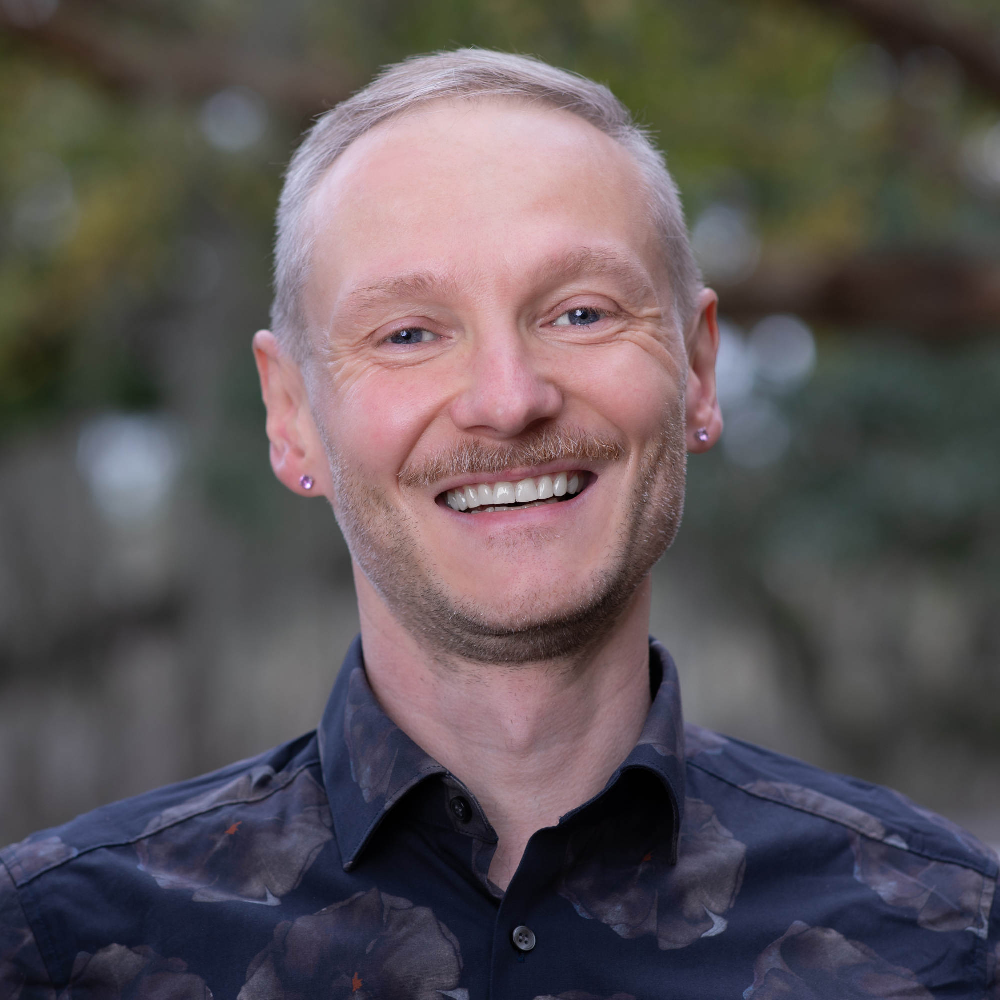

FSU SC Artificial Intelligence Seminar in Tallahassee
We are a group of people located in and around Tallahassee, all sharing an interest in artificial intelligence (AI) and machine learning. Our primary objective is the exchange of knowledge and ideas. The seminar is hosted by the Department of Scientific Computing at Florida State University (thus FSU SC). As part of the College of Arts and Sciences, the seminar brings together individuals from the College's diverse departments. If you are interested in getting to know us and possibly joining, we convene every Friday at 12:00 pm ET at DSL/SC-499 — you can also join via Zoom. We have a Discord; and to become a part of our mailing list, please email Gordon Erlebacher. We also have a sister seminar in the Department of Mathematics, the Data Science and Machine Learning Seminar, with which we hold joint sessions twice each semester. We are a diverse crowd, so presenting takes some thought. Our approach is best expressed by the NASA Trichotomy of Presenting, illustrated by Nathan:

Schedule for Fall 2025
Fridays, 12:00 p.m. ET, DSL/SC-499. Attend via Zoom: Zoom Link. You can find the 2025 Spring Schedule here.
| Date | Topic | Person | Materials |
|---|---|---|---|
| 29 Aug | Organisational Meeting | All welcome | website |
| 05 Sep | AI for Industry | Delaney La Rosa | materials will be posted after the talks |
| 12 Sep | Panel: Impact of AI on Education | Host: Anthony Nguyen | event page, video |
| 19 Sep 1:20pm in Love 106 with the DS&ML Seminar |
The Barycentric Coding Model in Optimal Transport | Rocío Díaz Martín | |
| 26 Sep all technical session |
Transformer: The Basics | Olmo Zavala Romero | |
| 03 Oct | Post AGI Economy | Jose Miranda | slides |
| 10 Oct all technical session |
Diffusion Models for PDE Learning | Kunal Kanawade | |
| 17 Oct | The Moral Exploitation of Data Workers | Conny Knieling and Anthony Nguyen | |
| 24 Oct (our usual 12:00pm, DSL/SC-499) with the DS&ML Seminar all technical session |
Latest Architectures, Hierarchical Reasoning Model | Gordon Erlebacher | |
| 31 Oct | Platonic Representation Hypothesis | Zina Ward | |
| 07 Nov all technical session |
Before Ablation: Groundwork for Lexical Alignment Tests | Tommie Juzek, Xiaoyang Ming | slides |
| 14 Nov all technical session |
Optimization | Nick Dexter | |
| 21 Nov all technical session |
Parallel Computing | Gordon Erlebacher | slides |
| 28 Nov | Enjoy Thanksgiving ~ | ‚òÄÔ∏èüçπ‚òÄÔ∏è | ☕ |
| 05 Dec | Computational Biology | Peter Beerli |
Current members and their AI interests
 |
 |
 |
 |
| Jonathan Adams | Nathan Crock | Nick Dexter | Gordon Erlebacher |
| @FSU Information – AI Use in Higher Education – Syn-data for computer vision – RAG for research |
@FSU Data Science – LLMs – Retrieval Augmented Generation – Computational Reading Models |
@FSU Scientific Computing – Neural Operators – Interpretability – Explainable AI |
@FSU – Neuronal Populations – Evolving Topologies – LLMs |
|  |  |
 |
 |
| Tommie Juzek | Jose Miranda | Philippe Miron | Olmo Zavala Romero |
| @FSU – Morpho-syntax – NLP – LLMs |
@FSU – ML appl. in Oceanography – Machine Vision – LLMs |
@FSU COAPS – ML appl. to Earth science – AI automation – Retrieval-Augmented Generation |
@FSU SC – Scientific Machine Learning – Oceanography – Medical Imaging |
Send your details to Tommie if you want to be added to the table. If you find any errors on this page, also email Tommie.